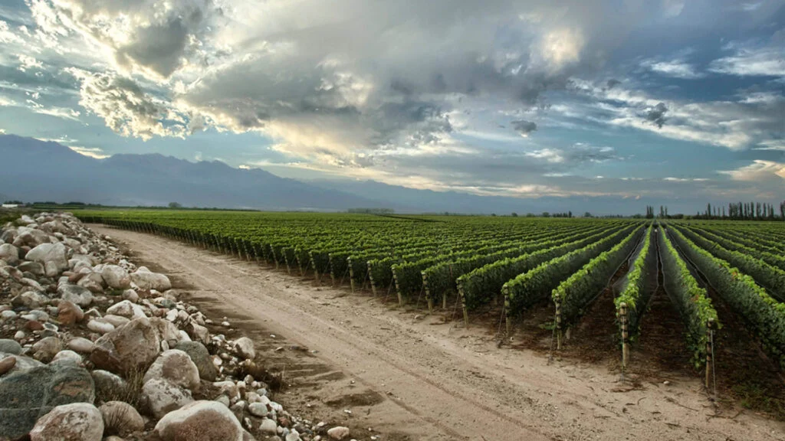

Explora los Mejores Vinos de Argentina
Descubre la variedad de cepas de vinos producidos en las regiones vinícolas más destacadas de Argentina. Desde los famosos Malbecs de Mendoza hasta los frescos Torrontés de Salta.
Regiones Vinícolas
Mendoza
Famosa por su Malbec.
Salta
Hogar del Torrontés.
Patagonia Argentina
Excelentes Pinot Noir.
San Juan
Conocida por su Syrah.